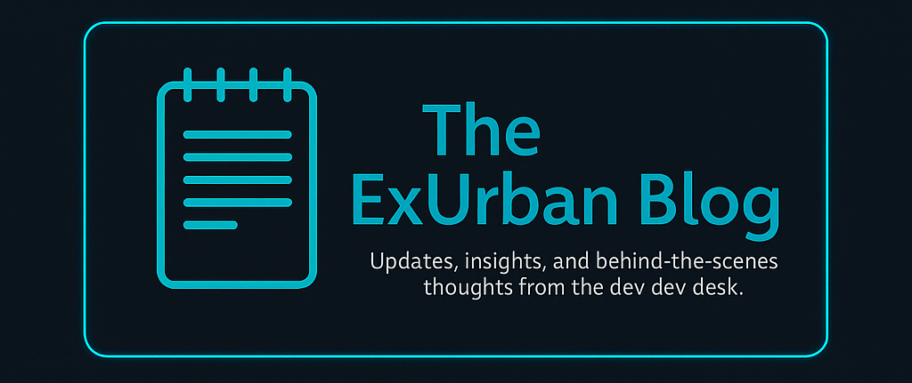

How We Built a Custom Dev Studio Without Templates
Published: May 2025
From Freight to Frameworks
Before ExUrban Technologies, I ran freight terminals, dispatched city freight, and handled logistics chaos like a pro. It wasn’t glamorous — but it taught me how to manage systems, people, and unexpected breakdowns. When I transitioned into tech, I brought that same mindset: everything should be trackable, fixable, and purposeful.
No Templates, No Gimmicks
I didn’t want to just resell someone else’s work. I wanted to create. So I learned HTML, CSS, and JavaScript — and then kept going. I built reusable page structures, styled from scratch, and developed systems that clients could own without being tied to an agency forever.
Code With a Backbone
We don’t believe in building behind a curtain. Our sites are: Custom coded (clean, fast, and scalable), Fully handed off (with all files + rights), WordPress-ready or static depending on your needs
Every build starts with the belief that the internet belongs to everyone, not just big tech or pre-built themes.
That’s why ExUrban exists: to help real people put their best foot forward online.